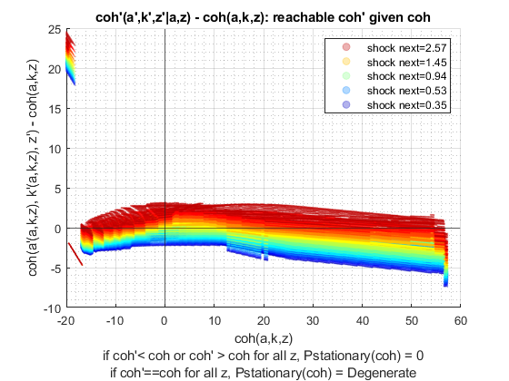

Derive Distributions for Risky + Safe Asset (Save + Borr) Interpolated-Percentage (Wrapper)
back to Fan's Dynamic Assets Repository Table of Content.
Contents
function [result_map] = ff_ipwkbz_ds_wrapper(varargin)
FF_IPWKBZ_DS_WRAPPER finds the stationary asset distributions
This is a warpper function.
Default
- it_subset = 5 is basic invoke quick test
- it_subset = 6 is invoke full test
- it_subset = 7 is profiling invoke
- it_subset = 8 is matlab publish
- it_subset = 9 is invoke operational (only final stats) and coh graph
it_param_set = 8; bl_input_override = true; [param_map, support_map] = ffs_ipwkbz_set_default_param(it_param_set); % parameters can be set inside ffs_ipwkz_set_default_param or updated here % param_map('it_w_perc_n') = 50; % param_map('it_ak_perc_n') = param_map('it_w_perc_n'); % param_map('it_z_n') = 15; % param_map('fl_coh_interp_grid_gap') = 0.025; % param_map('it_c_interp_grid_gap') = 0.001; % param_map('fl_w_interp_grid_gap') = 0.25; % param_map('it_w_perc_n') = 100; % param_map('it_ak_perc_n') = param_map('it_w_perc_n'); % param_map('it_z_n') = 11; % param_map('fl_coh_interp_grid_gap') = 0.1; % param_map('it_c_interp_grid_gap') = 10^-4; % param_map('fl_w_interp_grid_gap') = 0.1; % param_map('it_w_perc_n') = 100; % param_map('fl_r_save') = 0.025; % param_map('fl_r_borr') = 0.025; % These parameters below for comparison with abz_fibs model param_map('fl_r_save') = 0.025; param_map('fl_r_borr') = 0.095; param_map('fl_c_min') = 0.02; % param_map('st_analytical_stationary_type') = 'loop'; % param_map('st_analytical_stationary_type') = 'vector'; param_map('st_analytical_stationary_type') = 'eigenvector'; % get armt and func map [armt_map, func_map] = ffs_ipwkbz_get_funcgrid(param_map, support_map, bl_input_override); % 1 for override default_params = {param_map support_map armt_map func_map};
Parse Parameters 1
% if varargin only has param_map and support_map, params_len = length(varargin); [default_params{1:params_len}] = varargin{:}; param_map = [param_map; default_params{1}]; support_map = [support_map; default_params{2}]; if params_len >= 1 && params_len <= 2 % If override param_map, re-generate armt and func if they are not % provided bl_input_override = true; [armt_map, func_map] = ffs_ipwkbz_get_funcgrid(param_map, support_map, bl_input_override); else % Override all armt_map = [armt_map; default_params{3}]; func_map = [func_map; default_params{4}]; end % if profile, profile DP + Dist here support_map('bl_profile_dist') = false; % append function name st_func_name = 'ff_ipwkbz_ds_wrapper'; support_map('st_profile_name_main') = [st_func_name support_map('st_profile_name_main')]; support_map('st_mat_name_main') = [st_func_name support_map('st_mat_name_main')]; support_map('st_img_name_main') = [st_func_name support_map('st_img_name_main')];
Parse Parameters
% param_map params_group = values(param_map, {'st_analytical_stationary_type'}); [st_analytical_stationary_type] = params_group{:}; % support_map params_group = values(support_map, ... {'st_profile_path', 'st_profile_prefix', 'st_profile_name_main', 'st_profile_suffix','bl_time'}); [st_profile_path, st_profile_prefix, st_profile_name_main, st_profile_suffix, bl_time] = params_group{:};
Start Profiler and Timer
Start Profile
if (it_param_set == 7) close all; profile off; profile on; end % Start Timer if (bl_time) tic; end
Solve DP
bl_input_override = true; result_map = ff_ipwkbz_vf_vecsv(param_map, support_map, armt_map, func_map);
Warning: Using only the real component of complex data. Warning: Using only the real component of complex data. Warning: Using only the real component of complex data. Warning: Using only the real component of complex data. Warning: Using only the real component of complex data. Warning: Using only the real component of complex data. Warning: Using only the real component of complex data. Warning: Using only the real component of complex data. Warning: Using only the real component of complex data. Warning: Using only the real component of complex data. Warning: Using only the real component of complex data. Warning: Using only the real component of complex data. Warning: Using only the real component of complex data. Warning: Using only the real component of complex data. Warning: Using only the real component of complex data.

Derive Distribution
if (strcmp(st_analytical_stationary_type, 'loop')) result_map = ff_iwkz_ds(param_map, support_map, armt_map, func_map, result_map, bl_input_override); elseif (strcmp(st_analytical_stationary_type, 'vector')) result_map = ff_iwkz_ds_vec(param_map, support_map, armt_map, func_map, result_map, bl_input_override); elseif (strcmp(st_analytical_stationary_type, 'eigenvector')) result_map = ff_iwkz_ds_vecsv(param_map, support_map, armt_map, func_map, result_map, bl_input_override); end
----------------------------------------
xxxxxxxxxxxxxxxxxxxxxxxxxxxxxxxxxxxxxxxx
Summary Statistics for: cl_mt_coh
xxxxxxxxxxxxxxxxxxxxxxxxxxxxxxxxxxxxxxxx
----------------------------------------
fl_choice_mean
6.4272
fl_choice_sd
3.3965
fl_choice_coefofvar
0.5285
fl_choice_prob_zero
5.4575e-05
fl_choice_prob_below_zero
0.0037
fl_choice_prob_above_zero
0.9962
fl_choice_prob_max
6.5625e-14
tb_prob_drv
percentiles cl_mt_cohPercentileValues fracOfSumHeldBelowThisPercentile
___________ _________________________ ________________________________
0.1 -8.3582 -0.0021796
1 1.9789 -0.001509
5 2.581 0.017304
10 2.7817 0.034882
15 3.0828 0.060615
20 3.4843 0.083215
25 4.0864 0.11687
35 5.09 0.18945
50 6.194 0.31696
65 6.9969 0.4827
75 7.599 0.59018
80 8.1008 0.64528
85 9.0041 0.71556
90 10.309 0.78744
95 12.818 0.87646
99 18.338 0.96747
99.9 25.563 0.99575
----------------------------------------
xxxxxxxxxxxxxxxxxxxxxxxxxxxxxxxxxxxxxxxx
Summary Statistics for: cl_mt_pol_a
xxxxxxxxxxxxxxxxxxxxxxxxxxxxxxxxxxxxxxxx
----------------------------------------
fl_choice_mean
0.0797
fl_choice_sd
1.4273
fl_choice_coefofvar
17.9001
fl_choice_prob_zero
0
fl_choice_prob_below_zero
0.5311
fl_choice_prob_above_zero
0.4689
fl_choice_prob_max
8.4014e-31
tb_prob_drv
percentiles cl_mt_pol_aPercentileValues fracOfSumHeldBelowThisPercentile
___________ ___________________________ ________________________________
0.1 -11.52 -0.2058
1 -2.4489 -0.65186
5 -1.2977 -1.5587
10 -0.84548 -2.2096
15 -0.6053 -2.6643
20 -0.32368 -2.9391
25 -0.23416 -3.1103
35 -0.13608 -3.3279
50 -0.011124 -3.4499
65 0.11616 -3.347
75 0.19514 -3.1765
80 0.26972 -3.0061
85 0.35923 -2.8411
90 0.7259 -2.539
95 2.0357 -1.7533
99 5.9255 -0.042567
99.9 11.476 0.83022
----------------------------------------
xxxxxxxxxxxxxxxxxxxxxxxxxxxxxxxxxxxxxxxx
Summary Statistics for: cl_mt_pol_k
xxxxxxxxxxxxxxxxxxxxxxxxxxxxxxxxxxxxxxxx
----------------------------------------
fl_choice_mean
4.5420
fl_choice_sd
2.1796
fl_choice_coefofvar
0.4799
fl_choice_prob_zero
0
fl_choice_prob_below_zero
0
fl_choice_prob_above_zero
1.0000
fl_choice_prob_max
1.7253e-12
tb_prob_drv
percentiles cl_mt_pol_kPercentileValues fracOfSumHeldBelowThisPercentile
___________ ___________________________ ________________________________
0.1 1.1287 0.00017042
1 1.3259 0.0028199
5 1.7925 0.019267
10 2.1973 0.0432
15 2.2747 0.066141
20 2.6716 0.091372
25 2.8412 0.12333
35 3.4731 0.19337
50 4.5134 0.32838
65 5.1246 0.49169
75 5.2206 0.59989
80 5.7401 0.65734
85 6.3167 0.72259
90 7.2197 0.79679
95 8.8105 0.88129
99 12.582 0.96873
99.9 16.707 0.99595
----------------------------------------
xxxxxxxxxxxxxxxxxxxxxxxxxxxxxxxxxxxxxxxx
Summary Statistics for: cl_mt_pol_c
xxxxxxxxxxxxxxxxxxxxxxxxxxxxxxxxxxxxxxxx
----------------------------------------
fl_choice_mean
1.8055
fl_choice_sd
0.5708
fl_choice_coefofvar
0.3161
fl_choice_prob_zero
0
fl_choice_prob_below_zero
1.3204e-04
fl_choice_prob_above_zero
0.9999
fl_choice_prob_max
6.5625e-14
tb_prob_drv
percentiles cl_mt_pol_cPercentileValues fracOfSumHeldBelowThisPercentile
___________ ___________________________ ________________________________
0.1 0.90053 -0.00094947
1 0.92985 0.0061673
5 0.9466 0.029778
10 1.4148 0.063372
15 1.4335 0.10107
20 1.4584 0.13615
25 1.4958 0.18244
35 1.5581 0.26694
50 1.6329 0.40336
65 1.6953 0.53229
75 2.2678 0.66161
80 2.3092 0.71568
85 2.3837 0.78068
90 2.4995 0.84849
95 2.7065 0.91911
99 3.17 0.98125
99.9 3.7907 0.99784
xxx All Variables PERCENTILES AND STATS xxx
tb_outcomes_meansdperc: mean, sd, percentiles
mean sd coefofvar min max pYis0 pYls0 pYgr0 pYisMINY pYisMAXY p0_1 p1 p5 p10 p15 p20 p25 p35 p50 p65 p75 p80 p85 p90 p95 p99 p99_9
________ _______ _________ _________ ______ __________ __________ _______ __________ __________ _______ _______ _______ ________ _______ ________ ________ ________ _________ _______ _______ _______ _______ ______ ______ ______ ______
cl_mt_coh 6.4272 3.3965 0.52845 -20 57.277 5.4575e-05 0.0037078 0.99624 0.00013204 6.5625e-14 -8.3582 1.9789 2.581 2.7817 3.0828 3.4843 4.0864 5.09 6.194 6.9969 7.599 8.1008 9.0041 10.309 12.818 18.338 25.563
cl_mt_pol_a 0.079738 1.4273 17.9 -19.999 49.132 0 0.53108 0.46892 1.3549e-14 8.4014e-31 -11.52 -2.4489 -1.2977 -0.84548 -0.6053 -0.32368 -0.23416 -0.13608 -0.011124 0.11616 0.19514 0.26972 0.35923 0.7259 2.0357 5.9255 11.476
cl_mt_pol_k 4.542 2.1796 0.47988 5.018e-07 22.244 0 0 1 1.3549e-14 1.7253e-12 1.1287 1.3259 1.7925 2.1973 2.2747 2.6716 2.8412 3.4731 4.5134 5.1246 5.2206 5.7401 6.3167 7.2197 8.8105 12.582 16.707
cl_mt_pol_c 1.8055 0.57078 0.31614 -20 7.9469 0 0.00013204 0.99987 0.00013204 6.5625e-14 0.90053 0.92985 0.9466 1.4148 1.4335 1.4584 1.4958 1.5581 1.6329 1.6953 2.2678 2.3092 2.3837 2.4995 2.7065 3.17 3.7907
xxx All Variables Fraction of Y Held up to Percentile xxx
tb_outcomes_fracheld: fraction of asset/income/etc held by hh up to this percentile
fracByP0_1 fracByP1 fracByP5 fracByP10 fracByP15 fracByP20 fracByP25 fracByP35 fracByP50 fracByP65 fracByP75 fracByP80 fracByP85 fracByP90 fracByP95 fracByP99 fracByP99_9
___________ _________ ________ _________ _________ _________ _________ _________ _________ _________ _________ _________ _________ _________ _________ _________ ___________
cl_mt_coh -0.0021796 -0.001509 0.017304 0.034882 0.060615 0.083215 0.11687 0.18945 0.31696 0.4827 0.59018 0.64528 0.71556 0.78744 0.87646 0.96747 0.99575
cl_mt_pol_a -0.2058 -0.65186 -1.5587 -2.2096 -2.6643 -2.9391 -3.1103 -3.3279 -3.4499 -3.347 -3.1765 -3.0061 -2.8411 -2.539 -1.7533 -0.042567 0.83022
cl_mt_pol_k 0.00017042 0.0028199 0.019267 0.0432 0.066141 0.091372 0.12333 0.19337 0.32838 0.49169 0.59989 0.65734 0.72259 0.79679 0.88129 0.96873 0.99595
cl_mt_pol_c -0.00094947 0.0061673 0.029778 0.063372 0.10107 0.13615 0.18244 0.26694 0.40336 0.53229 0.66161 0.71568 0.78068 0.84849 0.91911 0.98125 0.99784
End Profiler and Timer
End Timer
if (bl_time) toc; end % End Profile if (it_param_set == 7) profile off profile viewer st_file_name = [st_profile_prefix st_profile_name_main st_profile_suffix]; profsave(profile('info'), strcat(st_profile_path, st_file_name)); end
end
ans =
Map with properties:
Count: 13
KeyType: char
ValueType: any